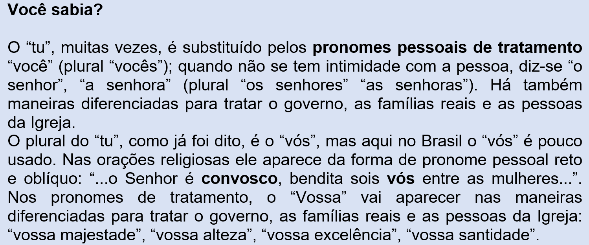

Capítulo 4: A saia: Item da indústria têxtil e vestuário
Questão-problema:
A saia, desde o século XII, é uma peça de roupa feminina vista com poder de sedução. A indústria do vestuário aposta nesta afirmação? Que tipos de saias ela confecciona? Qual sua demanda anual?
(Fonte: https://textileindustry.ning.com/forum/topics/as-mudan-as-e-r-evolu-es-das-saias-nos-s-culos-xx-e-xxi)
Reconstruindo conhecimentos:
Antes da leitura e interpretação de texto que costumamos fazer, apresentamos um texto bem-humorado como exercício verbal.
Você já estudou os tempos verbais do modo indicativo e a forma de gerúndio. Eu deixarei lacunas para você completar, usando corretamente os tempos verbais.
Então ... vamos lá!
Hora de dormir
(Fernando Sabino)
Por que não (poder) _________ficar vendo televisão?
̶ Porque você (ter de dormir)________________________.
̶ Por quê?
̶ Porque está na hora, ora essa.
̶ Hora essa?
̶ Além do mais, isso não é programa para menino.
̶ Por quê?
̶ Porque é assunto de gente grande que você não(entender) ___________.
̶ Estou( entender) _____________ tudo.
̶ Mas não(servir) ___________ para você. É impróprio.
̶ Vai ter mulher pelada?
̶ Que bobagem é essa? Ande, vá dormir que você tem colégio amanhã cedo.
̶ Todo o dia eu(ter)__________.
̶ Está bem, todo o dia você tem. Agora desligue isso e vá dormir.
̶ Espera um pouquinho.
̶ Não(esperar) _____________ não.
̶ Você vai ficar aí(ver) ________e eu não vou.
̶ Fico vendo não. Pode desligar. Tenho horror de televisão. Vamos, obedeça a seu pai.
̶ Os outros meninos todos (dormir) ___________ tarde, só eu que (dormir) __________ cedo.
̶ Não tenho nada que ver com os outros meninos: tenho que ver com meu filho. Já para a cama.
̶ Também eu vou para a cama e não durmo, pronto. Fico acordado a noite toda.
̶ Não comece com coisa não que eu (perder) ___________ a paciência.
̶ Pode perder.
̶ Deixe de ser malcriado.
̶ Você mesmo que me (criar) __________.
̶ O quê? Isso é maneira de falar com seu pai?
̶ Falo como quiser, pronto.
̶ Não fique (responder)_____________ não: cale essa boca.
̶ Não calo. A boca é minha.
̶ Olha que eu (por) ____________ de castigo.
̶ Pode pôr.
̶ Venha cá! Se der mais um pio, vai levar umas palmadas.
̶ ...
̶ Quem é que anda lhe (ensinar) ____________ esses modos? Você está (ficar) _________ muito insolente.
̶ Ficando o quê?
̶ Atrevido, malcriado. Eu com sua idade já (saber) __________ obedecer. Quando é que eu (ter) _________ coragem de responder a meu pai como você faz. Ele me (descer) _________ o braço, não tinha conversa. Eu porque sou muito mole, você fica (abusar) ____________ ...
̶ Naquele tempo não tinha televisão.
̶ Mas tinha outras coisas.
̶ Que outras coisas. Ora deixe de conversa. Vamos desligar esse negócio. Pronto, acabou-se. Agora é tratar de dormir.
̶ Chato.
̶ Como? Repete para você ver o que acontece.
̶ Chato.
̶ Tome, para você aprender. E amanhã fica de castigo, está (ouvir) ____________? Para aprender a ter respeito a seu pai.
̶ ...
̶ E não adianta ficar aí (chorar)__________ feito bobo. Venha cá.
̶ Amanhã eu não (ir) _________ ao colégio.
̶ Vai sim senhor. E não adianta ficar fazendo essa carinha. Não pensa que me (comover) __________. Anda, vem cá.
̶ Você me (bater) ___________ ...
̶ Bati porque você (merecer) _________. Já acabou, pare de chorar. Foi de leve, não (doer) __________ nem nada. Peça perdão a seu pai e vá dormir.
̶ ...
̶ Então você não tem pena do seu pai? Vamos, tome a bênção e vá dormir.
̶ Papai.
̶ Que é?
̶ Me desculpe.
̶ Está desculpado. Deus o abençoe. Agora vai.
̶ Por que não posso ficar vendo televisão?
(Fonte: SABINO, Fernando. Para Gostar de Ler. Volume 1- Crônicas. São Paulo: Ática, 1989.)
Vamos à interpretação de texto:
Teologia 1
(Eduardo Galeano)
O catecismo me ensinou, na infância, a fazer o bem por interesse e a não fazer o mal por medo. Deus me oferecia castigos e recompensas, me ameaçava com o inferno em e prometia o céu; e eu temia e acreditava. Passaram-se os anos. Eu já não temo nem creio. E em todo o caso – penso – se mereço ser assado cozido no caldeirão do inferno, condenado ao fogo lento e eterno, que assim seja. Assim me salvarei do purgatório, que está cheio de horríveis turistas de classe média; e no final das contas se fará justiça. Sinceramente: merecer, mereço. Nunca matei ninguém é verdade, mas por falta de coragem ou de tempo, e não por falta de querer. Não vou à missa aos domingos, nem nos dias de guarda. Cobicei quase todas as mulheres de meus próximos, exceto as feias, e assim violei, pelo menos em intenção, a propriedade privada que Deus pessoalmente sacramentou nas tábuas de Moisés: Não cobiçarás a mulher de teu próximo nem seu touro nem seu asno ... e como se fosse pouco, com premeditação e deslealdade cometi o ato do amor sem o nobre propósito de reproduzir a mão-de-obra. Sei muito bem que o pecado carnal não é bem visto no céu; mas desconfio que Deus condena o que ignora.
Teologia 2
(Eduardo Galeano)
O Deus dos cristãos, Deus da minha infância, não faz amor. Talvez o único deus que nunca fez amor, dentre todos os deuses de todas as religiões da história humana. Cada vez que penso nisso, sinto pena dele. E então o perdoo por ter sido o meu superpai castigador, chefe de polícia do universo, e penso que afinal Deus também foi meu amigo naqueles velhos tempos, quando eu acreditava Nele e acreditava que Ele acreditava em mim. Então preparo a orelha, na hora dos rumores mágicos, entre o pôr-do-sol e o nascer subir da noite, e acho que escuto suas melancólicas confidências.
(Fonte: GALEANO, Eduardo. O Livro dos Abraços. Porto Alegre: L&PM, 1991.)
Vamos, juntos, analisar os textos Teologia 1 e Teologia 2, de Eduardo Galeano?
1. Há, segundo o autor, certo maniqueísmo no ensino da religião. Maniqueísmo visão do mundo que o divide em dois aspectos opostos e incompatíveis. Exemplo: "Admitir que os bons sejam sempre bons e os maus sempre maus é uma demonstração de maniqueísmo." é qualquer Você concorda ou não? Por quê?
2. O autor diz que, quando pequeno, temia e acreditava no catecismo que ele aprendeu; com o passar dos anos, ele já não teme nem crê. Percebemos, pelo texto, que ele se contradiz. Explique isso.
3. No segundo parágrafo do Teologia 1, podemos afirmar que o autor prefere o inferno ao purgatório. Como sabemos disso?
4. Por que ele chama a classe média de “horríveis turistas”? E por que eles estarão em peso, no purgatório?
5. Qual o tema principal abordado pelo autor nos dois textos? Qual ou quais os temas secundários?
6. Nos dois textos, há uma humanização de Deus. No segundo texto, qual o papel que Deus assumiu na vida do autor?
7. Observe que no texto “Teologia2” aparece Deus com maiúscula e deus com minúscula. Por que acontece isso?
8. No mesmo texto, aparece a seguinte frase: ”quando eu acreditava Nele e acreditava que Ele acreditava em mim.” Por que as duas palavras em negrito estão escritas em maiúsculas?
9. O autor abandona a companhia de Deus? Justifique sua resposta.
Pronomes pessoais: Os componentes substitutos dos substantivos
Quando eu era adolescente e estudava no ginásio – que era o ensino fundamental daquela época – havia um livro de língua portuguesa, chamado “Português ao Alcance de Todos” que eu adorava. Ali aprendi muitas coisas. Em uma das lições de morfologia, o autor, Nelson Custódio de Oliveira, comparava os pronomes com embaixadores (aquelas pessoas que representam o presidente da república de seu país nos diversos países que eles habitam). Eu nunca esqueci, porque a função dos pronomes é essa mesma: representar (substituir ou acompanhar) os diversos substantivos nas mais variadas situações.
No texto “Teologia 1 e 2”, lemos, por exemplo:
Deus me oferecia castigos e recompensas.
Deus também foi meu amigo naqueles velhos tempos, quando eu acreditava Nele e acreditava que Ele acreditava em mim.
Como você pôde observar, as palavras em negrito substituem substantivos (no caso o autor do texto – está narrado em primeira pessoa – e Deus); por isso elas são chamadas de pronomes (estão a serviço dos nomes).
Temos vários pronomes na língua portuguesa, mas comecemos com os pronomes pessoais retos e os oblíquos que são assim chamados por substituírem as três pessoas gramaticais, também chamadas de “pessoas do discurso” e porque vão ter uma intimidade muito grande com os verbos, ora praticando a ação verbal, como: eu acredito, tu acreditas, ele acredita, nós acreditamos, eles acreditam; ora sendo objeto da ação verbal, como: gostas de mim?, acredito em ti, abracei-o, beijamo-nos, beijaram-se.
1. Quando alguém vai se referir a si próprio, ele diz “eu” (o plural é “nós”); é a primeira pessoa, a que fala.
Pode dizer também de modo oblíquo “Gosto de mim”, “Amo-me”, “Vem comigo”.
2. Quando o eu se refere a alguém com quem está falando, ele diz “tu” (o plural é “vós”), a segunda pessoa, aquela com quem o eu fala. Pode dizer também de modo oblíquo “Gosto de ti”, “Amo-te”, “Vou contigo”.
3. Quando o eu fala de alguém ou de algo, ele diz “ele” ou “ela”(o plural é “eles” ou “elas”), a terceira pessoa, aquela de quem se fala. A terceira pessoa é vasta porque pode se referir à gente, animal ou coisa. São também pronomes de terceira pessoa oblíquos “Eu a amo, gosto dela”. “Maria feriu-se com um prego”. “Ela pediu-o em casamento, beijando-o na nossa frente”.

Praticando:
Complete com pronomes pessoais:
CÃO! CÃO! CÃO!
(Millôr Fernandes)
Abriu a porta e viu o amigo que há muito tempo não via. Estranhou que _____ viesse acompanhado por um cão. Cão não muito grande, mas bastante forte, de raça indefinível, saltitante e com um ar alegremente agressivo.
Abriu a porta e cumprimentou o amigo, pois, efusivamente.
“Quanto tempo! Quanto tempo!” ecoou o outro. O cão aproveitou a saudação e se embarafustou casa adentro, e logo um barulho na cozinha demonstrava que _____ tinha virado qualquer coisa. O dono da casa espichou as orelhas. O amigo visitante, porém, nem nada. “Ora, veja ________, a última vez que ______ vimos foi em ...”.
“E _______, casou também? ... o cão passou pela sala, entrou no quarto e novo barulho, desta vez de coisa definitivamente quebrada. Houve um sorriso amarelo por parte do dono da casa, mas de perfeita indiferença por parte do visitante. “Quem morreu foi o ... você se lembra _______?” “Lembro, ora, era o que mais ...” O cão saltou sobre um móvel e derrubou um abajur, logo trepou as patas imundas no sofá e deixou a marca indelével de seu crime.
Os dois amigos, tensos, agora fingiam não perceber.
Mas, por fim, o visitante se foi. Se despediu efusivamente como chegara e se foi.
Já ia saindo, quando o dono da casa perguntou: “Não vai levar seu cão?”
“Cão? Ah, cão! Oh! Agora estou percebendo. Não é meu, não. Quando _____ entrei, _______ entrou ____________ naturalmente. Pensei que fosse seu.”
MORAL: Quando notarmos defeitos nos amigos, convém ter uma conversa esclarecedora.
(Disponível em: http://sugestoesdeatividades.blogspot.com/2012/09/cao-cao-cao-millor.html)
O que aprendi:
- Pronomes pessoais retos e oblíquos:
- Quando alguém vai se referir a si próprio, ele diz “eu” (o plural é “nós”); é a primeira pessoa, a que fala.
- Quando o eu se refere a alguém com quem está falando, ele diz “tu” (o plural é “vós”), a segunda pessoa, aquela com quem o eu fala
- Quando o eu fala de alguém ou de algo, ele diz “ele” ou “ela”(o plural é “eles” ou “elas”), a terceira pessoa, aquela de quem se fala. A terceira pessoa é vasta porque pode se referir à gente, animal ou coisa.